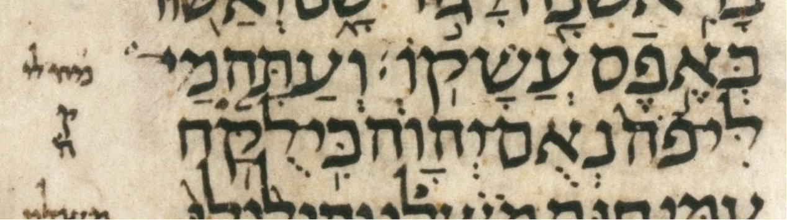
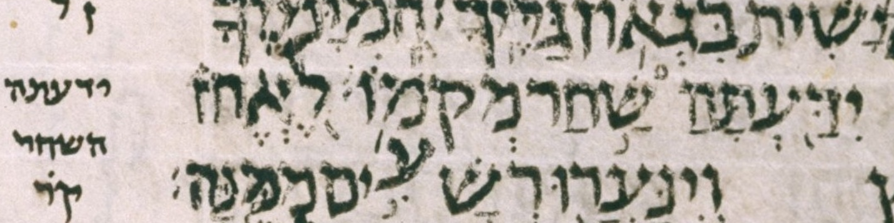
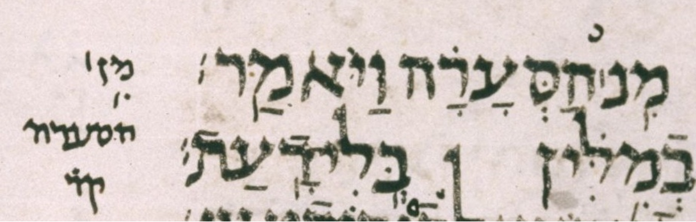
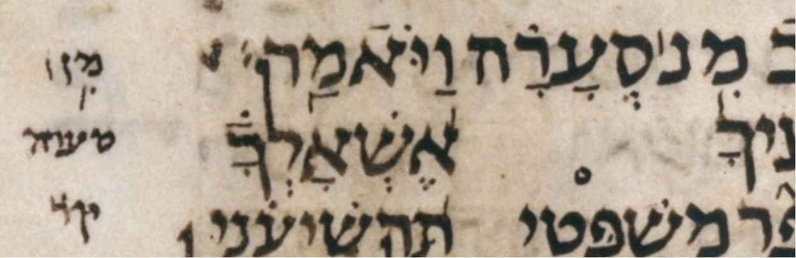

| bcv (tanach.us) | Ezra4:12 |
| bcv (Mwd) | Ezra4:12 |
| ab-uword | *אשכללו **וְשׁוּרַיָּ֣א |
| ab-word | *)#KLLW **W:/$W.RAY./F74) |
| diff type | miscellaneous |
| page | 449B |
| col-and-line | 2 25 |
This is part 2 of 2 of a change from k1q1×2 to k2q2. UXLC rejected this change.
I think I understand the impulse behind this WLC change, but nonetheless I find the change inadvisable. So I not only support UXLC’s rejection of this change but also advise WLC to revert this change in some future version.
My guess is that the impulse behind this change is that we are primarily dealing with a word boundary issue here, so a single k2q2 seems more appropriate than two adjacent k1q1 constructs, a configuration we sometimes abbreviate as k1q1×2. (There is a ḥaser/malei issue later in the second word, but the primary issue is the word boundary issue.) The word boundary issue concerns a difference between qere and ketiv as to where the word boundary falls within the letters ושוריאשכל[י]לו.) The table below shows the details.
| word boundary | ||
|---|---|---|
| ketiv | ושורי אשכללו | before the א |
| qere | וְשׁוּרַיָּ֣א שַׁכְלִ֔ילוּ | after the א |
Because we are primarily dealing with a word boundary issue, it is an understandable impulse to group these 4 words into a single k2q2 construct (which is what WLC 4.22 now has) rather than group them into two adjacent k1q1 constructs. (which is what WLC 4.20 had). The table below shows what these two grouping strategies look like in Michigan-Claremont terms.
| k2q2 | *ka | *kb | **qa | **qb |
| k1q1×2 | *ka | **qa | *kb | **qb |
Although the impulse is understandable, it is not consistent with the diplomatic spirit of WLC to allow such an impulse to override what we see in the manuscript. What we see in the manuscript is the choice to group these words into two adjacent k1q1 constructs. BHS and BHQ agree with the manuscript, though of course we’d be willing to reject their reading if it contradicted the manuscript.
The table below shows two other k2q2 in WLC that are instructive to compare with this one, since they, too, concern word division.
| manuscript | ||
|---|---|---|
| Ezek42:9 | ומתחתה לשכות וּמִתַּ֖חַת הַלְּשָׁכ֣וֹת | supports WLC’s k2q2 |
| 2Sam21:12 | שם הפלשתים שָׁ֙מָּה֙ פְּלִשְׁתִּ֔ים | supports k2q2+k1q1 rather than WLC’s k1q1+k2q2 |
In the case of Ezekiel 42:9, we find that the manuscript supports WLC’s k2q2 grouping (page 299B col 3 line 22):

But in the case of 2 Samuel 21:12, we find that the manuscript does not support WLC’s k2q2 grouping. Rather, it supports a different k2q2 grouping than that found in WLC! The manuscript’s k2q2 reaches back one word earlier than WLC’s k2q2 (page 181B col 2 line 12):

Using square brackets to set off the k2q2 grouping, here’s how WLC and the manuscript divide up the qere letters of these three words:
| WLC | תלאום [שמה פלשתים] |
| Ms ל | [תלאום שמה] פלשתים |
Let’s look at the six other k2q2 cases in WLC. These cases don’t concern word division, but it will still be interesting to see whether, in each case, the manuscript does or does not support WLC’s k2q2 grouping.
| manuscript | ||
|---|---|---|
| 1Kings17:15 | הוא־והיא הִיא־וָה֛וּא | supports k1q1×2 rather than WLC’s k2q2 |
| 1Sam20:2 | לו־עשה לֹֽא־יַעֲשֶׂ֨ה | supports WLC’s k2q2 |
| Isaiah52:5 | מי־לי־ מַה־לִּי־ | supports WLC’s k2q2 |
| Job38:12 | ידעתה שחר יִדַּ֖עְתָּה הַשַּׁ֣חַר | supports WLC’s k2q2 |
| Job38:1 | מנ הסערה מִ֥ן ׀ הַסְּעָרָ֗ה | supports k1q2 rather than WLC’s k2q2 |
| Job40:6 | מנ סערה מִ֥ן ׀ סְעָרָ֗ה | supports k1q2 rather than WLC’s k2q2 |
In the case of 1 Kings 17:15, we find that the manuscript does not support WLC’s k2q2 grouping (page 197B col 3 line 24):

In the case of 1 Sam 20:2, we find that the manuscript supports WLC’s k2q2 grouping (page 161B col 2 line 17):

In the case of Isaiah 52:5, we find that the manuscript supports WLC’s k2q2 grouping. It is slightly surprising that this k/q is framed as a k2q2 at all, since the second word of both qere and ketiv is לי, i.e. there is no variation in the second word. Here is the manuscript image (page 240B col 3 line 3):

In the case of Job 38:12, we find that the manuscript supports WLC’s k2q2 grouping (page 408A col 2 line 17):

In the cases of Job 38:1 and 40:6, we find that while the manuscript supports WLC’s grouping of the two qere words together, the manuscript does not support WLC’s treatment of the ketiv letters as a single word. In other words, the manuscript supports a k1q2 grouping rather than a k2q2 grouping.
In both 38:1 and 40:6, the paseq after the nun should not be interpreted as relevant to the ketiv, i.e. should not be be interpreted as splitting the ketiv into two words. I find it surprising and unfortunate that WLC went to the trouble of devoting a special bracket note, ]M, to these cases. A little more scrutiny might have revealed that there is only a mistake in transcription, not an anomaly in the manuscript. Here the WLC transcription has a little more work to do than usual because, as with all k/q, WLC is not just transcribing BHS (or later, ל) but also converting (in this case incorrectly) from pointed-ketiv, unpointed-qere representation to the opposite representation.
Note that, extraordinarily, in Job 38:1 and 40:6, the scribe has reiterated some of the pointing of the ketiv on the qere letters, pointing the מן of the qere with ḥiriq, gaʿya (meteg), and paseq. (I’m not sure why this was done, and I don’t think it is relevant to the issue at hand, but nonetheless it seemed worth mentioning.) Here is the manuscript image for Job 38:1 (page 408A col 2 line 5):

Here is the manuscript image for Job 40:6 (page 408B col 2 line 13):

Having completed our review of k2q2 in WLC, we can say that some are supported by the manuscript, and some are not. I would urge WLC, in future versions, to use k2q2 only when supported by the manuscript.
It would be nice to also review all cases of multiple adjacent k1q1 to see if all of them are supported by the manuscript. I wonder whether, for example, some instances of k1q1×2 in WLC should in fact be represented as k2q2. I do not propose to do this (possibly rather large) survey at the moment, but one problematic case has, almost accidentally, come to my attention, and I will discuss it here. That cases is a k1q1×3 in 2 Samuel 5:2:
| הייתה מוציא והמבי |
| הָיִ֛יתָ הַמּוֹצִ֥יא וְהַמֵּבִ֖יא |
Finally, we should admit that qere grouping may have been left up to individual scribal discretion. In other words, qere grouping may not have been viewed as meaningful by the Masoretes. Just as we do not distinguish a normal lamed letter from the occasional elongated one, perhaps we should not be concerned to preserve qere grouping, particularly when we don’t like the manuscript’s grouping.
That having been said, it seems more consistent with the diplomatic spirit of WLC to err on the safe side by preserving qere grouping. For example this is what BHS did, and WLC continues to do, with respect to gaʿya (meteg) placement. In the 50-or-so years since the publication of BHS, scholarship has reached a consensus that gaʿya placement was not viewed as meaningful by the Masoretes. I.e. the consensus is that gaʿya placment was left up to scribal discretion. Still, at the time, perhaps it was the right decision for BHS to err on the safe side by preserving gaʿya placement. I urge WLC to follow this example and err on the safe side by preserving qere grouping.
{kind=link}
{kind=link}
{kind=link}
{kind=link}
{kind=link}
{kind=link}
{kind=link}
{kind=link}